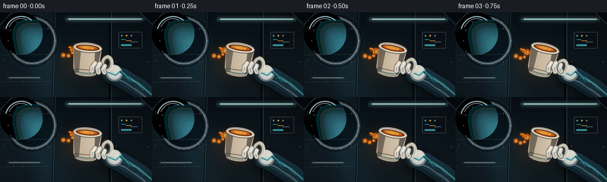
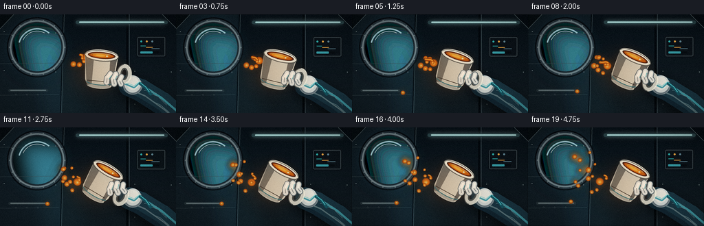
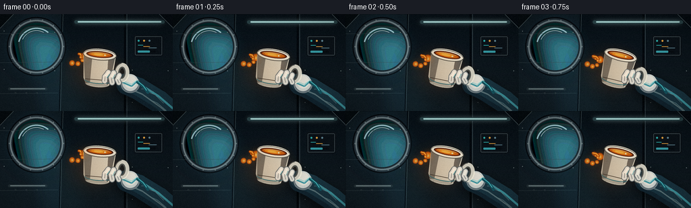
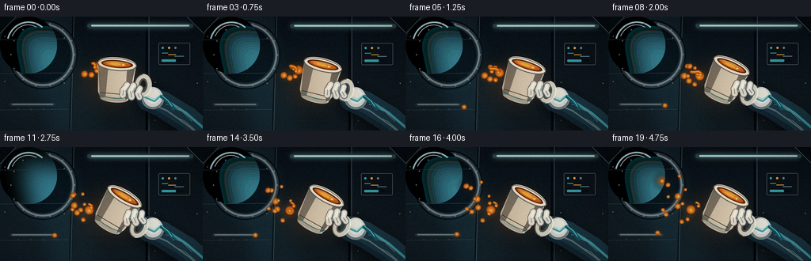
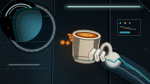
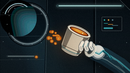
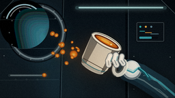
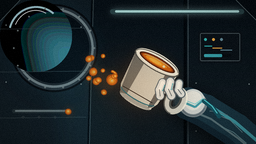

CODING AGENTS AS PIXEL WORLD MODELS
traex/DeepSeek-V4.1-Flash · mechanics_0003
点击播放 · 原生 RGB 像素
逐轮保存的候选
回放视频、检查图与代码变化。
每份候选均可单独播放。实际图片检查记录在下方工具轨迹中。
候选 01播放与检查图
点击播放 · 原生 RGB 像素


展开代码变化
--- 上一保存版本
+++ 本次保存版本
@@ -0,0 +1,690 @@
+from __future__ import annotations
+
+import math
+import random
+from pathlib import Path
+
+import numpy as np
+from PIL import Image, ImageDraw, ImageFilter
+
+import artifact_io
+
+
+W, H = 256, 144
+FPS = 4.0
+FRAMES = 20
+S = 5 # Supersampling factor.
+
+
+def sc(value: float) -> int:
+ return int(round(value * S))
+
+
+def pt(x: float, y: float) -> tuple[int, int]:
+ return sc(x), sc(y)
+
+
+def box(x0: float, y0: float, x1: float, y1: float) -> tuple[int, int, int, int]:
+ return sc(x0), sc(y0), sc(x1), sc(y1)
+
+
+def rgba(color: tuple[int, int, int], alpha: int = 255) -> tuple[int, int, int, int]:
+ return color[0], color[1], color[2], alpha
+
+
+def vertical_gradient(size: tuple[int, int], top: tuple[int, int, int], bottom: tuple[int, int, int]) -> Image.Image:
+ width, height = size
+ ramp = np.linspace(0.0, 1.0, height, dtype=np.float32)[:, None, None]
+ top_arr = np.asarray(top, dtype=np.float32)[None, None, :]
+ bottom_arr = np.asarray(bottom, dtype=np.float32)[None, None, :]
+ arr = top_arr * (1.0 - ramp) + bottom_arr * ramp
+ arr = np.repeat(arr, width, axis=1).astype(np.uint8)
+ return Image.fromarray(arr, "RGB")
+
+
+def linear_gradient(size: tuple[int, int], left: tuple[int, int, int], right: tuple[int, int, int]) -> Image.Image:
+ width, height = size
+ ramp = np.linspace(0.0, 1.0, width, dtype=np.float32)[None, :, None]
+ left_arr = np.asarray(left, dtype=np.float32)[None, None, :]
+ right_arr = np.asarray(right, dtype=np.float32)[None, None, :]
+ arr = left_arr * (1.0 - ramp) + right_arr * ramp
+ arr = np.repeat(arr, height, axis=0).astype(np.uint8)
+ return Image.fromarray(arr, "RGB")
+
+
+def paste_clipped(base: Image.Image, layer: Image.Image, mask: Image.Image) -> None:
+ base.paste(layer, (0, 0), mask)
+
+
+def rounded_line(
+ draw: ImageDraw.ImageDraw,
+ points: list[tuple[float, float]],
+ width: float,
+ fill: tuple[int, int, int, int] | tuple[int, int, int],
+ joint: str = "curve",
+) -> None:
+ scaled = [pt(x, y) for x, y in points]
+ draw.line(scaled, fill=fill, width=sc(width), joint=joint)
+ radius = sc(width / 2)
+ for x, y in scaled:
+ draw.ellipse((x - radius, y - radius, x + radius, y + radius), fill=fill)
+
+
+def bezier(points: list[tuple[float, float]], count: int = 42) -> list[tuple[float, float]]:
+ if len(points) == 4:
+ p0, p1, p2, p3 = points
+ output = []
+ for index in range(count):
+ t = index / (count - 1)
+ u = 1.0 - t
+ x = u**3 * p0[0] + 3 * u * u * t * p1[0] + 3 * u * t * t * p2[0] + t**3 * p3[0]
+ y = u**3 * p0[1] + 3 * u * u * t * p1[1] + 3 * u * t * t * p2[1] + t**3 * p3[1]
+ output.append((x, y))
+ return output
+ if len(points) == 3:
+ p0, p1, p2 = points
+ output = []
+ for index in range(count):
+ t = index / (count - 1)
+ u = 1.0 - t
+ x = u * u * p0[0] + 2 * u * t * p1[0] + t * t * p2[0]
+ y = u * u * p0[1] + 2 * u * t * p1[1] + t * t * p2[1]
+ output.append((x, y))
+ return output
+ raise ValueError("Bezier expects 3 or 4 points")
+
+
+def rotate_about(point: tuple[float, float], origin: tuple[float, float], angle_deg: float) -> tuple[float, float]:
+ angle = math.radians(angle_deg)
+ c, s = math.cos(angle), math.sin(angle)
+ x, y = point[0] - origin[0], point[1] - origin[1]
+ return origin[0] + x * c - y * s, origin[1] + x * s + y * c
+
+
+def draw_stars(draw: ImageDraw.ImageDraw, rng: random.Random) -> None:
+ for _ in range(34):
+ angle = rng.uniform(0, math.tau)
+ radius = math.sqrt(rng.random()) * 32
+ x = 54 + math.cos(angle) * radius
+ y = 47 + math.sin(angle) * radius
+ if (x - 43) ** 2 + (y - 63) ** 2 < 29**2:
+ continue
+ size = rng.choice([0.25, 0.35, 0.45, 0.65])
+ brightness = rng.randint(125, 235)
+ draw.ellipse(box(x - size, y - size, x + size, y + size), fill=(brightness, brightness + 8, 235, 230))
+
+
+def draw_window(base: Image.Image, rng: random.Random) -> None:
+ # Steel bezel and recessed shadow.
+ for radius, color in [
+ (44.0, (7, 12, 17)),
+ (42.0, (40, 53, 61)),
+ (39.5, (113, 130, 135)),
+ (37.2, (28, 39, 46)),
+ (35.2, (5, 13, 20)),
+ ]:
+ base_draw = ImageDraw.Draw(base, "RGBA")
+ base_draw.ellipse(box(54 - radius, 48 - radius, 54 + radius, 48 + radius), fill=rgba(color))
+
+ glass = vertical_gradient((sc(72), sc(72)), (2, 9, 20), (7, 23, 35)).convert("RGBA")
+ glass_draw = ImageDraw.Draw(glass, "RGBA")
+
+ # Earth, clipped naturally by the circular window mask below.
+ earth_center = (43.0, 64.0)
+ earth_radius = 29.0
+ glass_draw.ellipse(
+ box(
+ earth_center[0] - earth_radius,
+ earth_center[1] - earth_radius,
+ earth_center[0] + earth_radius,
+ earth_center[1] + earth_radius,
+ ),
+ fill=(24, 89, 145, 255),
+ )
+ # Ocean gradients are built from translucent nested arcs.
+ for radius, color in [
+ (27.5, (24, 101, 156, 210)),
+ (23.0, (31, 119, 165, 125)),
+ (17.0, (33, 111, 154, 95)),
+ ]:
+ glass_draw.ellipse(
+ box(
+ earth_center[0] - radius + 3,
+ earth_center[1] - radius + 3,
+ earth_center[0] + radius + 3,
+ earth_center[1] + radius + 3,
+ ),
+ outline=color,
+ width=sc(2.2),
+ )
+
+ # Stylized land masses.
+ land = [
+ [(20, 49), (29, 46), (34, 50), (31, 56), (24, 58), (19, 55)],
+ [(50, 51), (57, 49), (61, 54), (58, 60), (53, 58), (49, 55)],
+ [(33, 70), (39, 66), (47, 69), (48, 76), (40, 80), (34, 76)],
+ ]
+ for poly in land:
+ glass_draw.polygon([pt(x - 18, y - 16) for x, y in poly], fill=(84, 126, 94, 220))
+ glass_draw.line([pt(x - 18, y - 16) for x, y in poly + [poly[0]]], fill=(122, 157, 113, 170), width=sc(0.7))
+
+ # Cloud bands.
+ for points, width, color in [
+ ([(18, 55), (25, 52), (32, 53), (38, 50)], 2.1, (225, 239, 238, 150)),
+ ([(28, 61), (36, 59), (43, 61), (49, 58)], 1.5, (218, 237, 241, 130)),
+ ([(40, 74), (46, 70), (52, 71), (58, 68)], 1.7, (220, 238, 238, 135)),
+ ]:
+ rounded_line(glass_draw, [(x - 18, y - 16) for x, y in points], width, color)
+
+ # Thin atmospheric rim and soft terminator.
+ glass_draw.arc(
+ box(earth_center[0] - 29, earth_center[1] - 29, earth_center[0] + 29, earth_center[1] + 29),
+ 120,
+ 340,
+ fill=(116, 211, 236, 205),
+ width=sc(1.1),
+ )
+ glass_draw.arc(
+ box(earth_center[0] - 28, earth_center[1] - 28, earth_center[0] + 28, earth_center[1] + 28),
+ 45,
+ 190,
+ fill=(2, 20, 37, 110),
+ width=sc(3.0),
+ )
+
+ draw_stars(glass_draw, rng)
+
+ mask = Image.new("L", (sc(72), sc(72)), 0)
+ mask_draw = ImageDraw.Draw(mask)
+ mask_draw.ellipse(box(0, 0, 72, 72), fill=255)
+ paste_clipped(base, glass, mask)
+
+ # A cool glass reflection across the upper-right side of the porthole.
+ reflection = Image.new("RGBA", (sc(72), sc(72)), (0, 0, 0, 0))
+ reflection_draw = ImageDraw.Draw(reflection, "RGBA")
+ reflection_draw.arc(box(8, 6, 64, 64), 195, 310, fill=(181, 224, 233, 72), width=sc(2.0))
+ reflection_draw.arc(box(13, 10, 58, 60), 205, 298, fill=(255, 255, 255, 42), width=sc(0.7))
+ paste_clipped(base, reflection, mask)
+
+ # Bezel bolts.
+ draw = ImageDraw.Draw(base, "RGBA")
+ for angle in np.linspace(0, math.tau, 14, endpoint=False):
+ x = 54 + math.cos(angle) * 40.3
+ y = 48 + math.sin(angle) * 40.3
+ draw.ellipse(box(x - 0.75, y - 0.75, x + 0.75, y + 0.75), fill=(156, 170, 169, 210))
+ draw.ellipse(box(x - 0.35, y - 0.35, x + 0.35, y + 0.35), fill=(47, 58, 61, 240))
+
+
+def draw_background(rng: random.Random) -> Image.Image:
+ image = vertical_gradient((W * S, H * S), (8, 17, 24), (18, 28, 34)).convert("RGBA")
+ draw = ImageDraw.Draw(image, "RGBA")
+
+ # Broad wall panels with restrained seams.
+ draw.polygon(
+ [pt(0, 0), pt(93, 0), pt(90, 144), pt(0, 144)],
+ fill=(18, 30, 38, 150),
+ )
+ draw.line([pt(93, 0), pt(89, 144)], fill=(63, 78, 83, 130), width=sc(1.1))
+ draw.line([pt(92, 0), pt(88, 144)], fill=(4, 10, 15, 220), width=sc(1.8))
+ draw.line([pt(185, 0), pt(185, 144)], fill=(3, 9, 13, 230), width=sc(3.0))
+ draw.line([pt(188, 0), pt(188, 144)], fill=(57, 71, 77, 135), width=sc(1.0))
+
+ # Overhead light, with a soft falloff.
+ light = Image.new("RGBA", image.size, (0, 0, 0, 0))
+ light_draw = ImageDraw.Draw(light, "RGBA")
+ light_draw.rounded_rectangle(box(108, 8, 245, 15), radius=sc(3.5), fill=(132, 191, 202, 185))
+ light_draw.rounded_rectangle(box(113, 10, 239, 12.5), radius=sc(1.2), fill=(225, 248, 244, 240))
+ light = light.filter(ImageFilter.GaussianBlur(sc(4.5)))
+ image.alpha_composite(light)
+ draw = ImageDraw.Draw(image, "RGBA")
+ draw.rounded_rectangle(box(110, 9, 244, 14), radius=sc(2.5), fill=(43, 68, 73, 210))
+ draw.rounded_rectangle(box(115, 10.2, 239, 12.4), radius=sc(1.0), fill=(177, 222, 220, 245))
+
+ # Right-side instrument cluster, kept subtle behind the cup.
+ draw.rounded_rectangle(box(198, 31, 242, 63), radius=sc(2.5), fill=(11, 19, 24, 230))
+ draw.rounded_rectangle(box(200, 33, 240, 61), radius=sc(1.5), outline=(73, 87, 91, 180), width=sc(0.8))
+ for index, color in enumerate([(48, 177, 174), (234, 167, 67), (98, 137, 151)]):
+ x = 204 + index * 8
+ draw.ellipse(box(x, 38, x + 2.8, 40.8), fill=rgba(color, 220))
+ draw.line([pt(x + 0.3, 46 + index * 2), pt(x + 8 + index * 2, 46 + index * 2)], fill=rgba(color, 150), width=sc(1.0))
+ draw.rounded_rectangle(box(204, 54, 231, 57), radius=sc(1.0), fill=(7, 13, 17, 240))
+ draw.rounded_rectangle(box(204, 54, 222, 57), radius=sc(1.0), fill=(55, 157, 166, 170))
+
+ # Small utility rail and hatch details.
+ draw.rounded_rectangle(box(12, 109, 70, 113), radius=sc(1.8), fill=(35, 48, 54, 210))
+ draw.rounded_rectangle(box(15, 110, 67, 111.5), radius=sc(0.6), fill=(111, 127, 130, 150))
+ for x in (22, 38, 54):
+ draw.ellipse(box(x, 116, x + 2.0, 118), fill=(11, 19, 24, 230), outline=(70, 84, 88, 180), width=sc(0.5))
+
+ # Corner braces add depth without stealing attention.
+ draw.polygon([pt(0, 0), pt(20, 0), pt(0, 21)], fill=(7, 13, 18, 230))
+ draw.line([pt(20, 0), pt(0, 21)], fill=(83, 99, 102, 150), width=sc(0.9))
+ draw.polygon([pt(256, 0), pt(236, 0), pt(256, 20)], fill=(7, 13, 18, 220))
+ draw.line([pt(236, 0), pt(256, 20)], fill=(83, 99, 102, 125), width=sc(0.8))
+
+ # Window and a faint cool glow around it.
+ glow = Image.new("RGBA", image.size, (0, 0, 0, 0))
+ glow_draw = ImageDraw.Draw(glow, "RGBA")
+ glow_draw.ellipse(box(12, 6, 96, 90), fill=(44, 132, 163, 60))
+ glow = glow.filter(ImageFilter.GaussianBlur(sc(14)))
+ image.alpha_composite(glow)
+ draw_window(image, rng)
+
+ # Fine panel texture and sparse rivets.
+ draw = ImageDraw.Draw(image, "RGBA")
+ for y in (29, 72, 118):
+ draw.line([pt(0, y), pt(86, y - 1)], fill=(60, 73, 78, 70), width=sc(0.55))
+ for x, y in [(6, 25), (6, 82), (81, 27), (81, 84), (196, 83), (249, 84), (196, 131), (249, 131)]:
+ draw.ellipse(box(x - 0.65, y - 0.65, x + 0.65, y + 0.65), fill=(126, 139, 140, 150))
+
+ return image
+
+
+def draw_arm_and_glove_back(image: Image.Image) -> None:
+ draw = ImageDraw.Draw(image, "RGBA")
+
+ # Soft shadow where the sleeve emerges from the bottom edge.
+ shadow = Image.new("RGBA", image.size, (0, 0, 0, 0))
+ shadow_draw = ImageDraw.Draw(shadow, "RGBA")
+ rounded_line(shadow_draw, [(258, 158), (221, 127), (190, 108)], 39, (0, 0, 0, 125))
+ shadow = shadow.filter(ImageFilter.GaussianBlur(sc(7)))
+ image.alpha_composite(shadow)
+ draw = ImageDraw.Draw(image, "RGBA")
+
+ # Suit sleeve: dark teal fabric with a cool edge light.
+ rounded_line(draw, [(267, 159), (236, 132), (205, 112), (188, 104)], 31.0, (18, 37, 48, 255))
+ rounded_line(draw, [(267, 153), (237, 127), (206, 108), (188, 101)], 27.0, (26, 53, 65, 255))
+ rounded_line(draw, [(263, 146), (235, 122), (207, 104), (189, 98)], 3.2, (63, 150, 160, 205))
+ rounded_line(draw, [(270, 166), (239, 139), (211, 119), (192, 111)], 2.0, (91, 113, 120, 105))
+
+ # Fabric folds.
+ for points in [
+ [(242, 132), (230, 120), (218, 115)],
+ [(246, 143), (233, 132), (222, 127)],
+ [(227, 115), (218, 112), (210, 111)],
+ ]:
+ rounded_line(draw, points, 0.75, (91, 127, 134, 120))
+
+ # Glove cuff and palm, behind the cup.
+ draw.ellipse(box(179, 91, 207, 117), fill=(121, 135, 139, 255))
+ draw.ellipse(box(181, 89, 205, 114), fill=(211, 216, 211, 255))
+ draw.ellipse(box(184, 91, 202, 110), fill=(235, 233, 222, 255))
+ draw.arc(box(180, 89, 206, 116), 25, 155, fill=(98, 113, 119, 190), width=sc(1.2))
+ draw.line([pt(181, 101), pt(195, 107), pt(203, 100)], fill=(73, 160, 170, 235), width=sc(2.2))
+ draw.line([pt(182, 99), pt(195, 104), pt(203, 98)], fill=(130, 217, 216, 165), width=sc(0.7))
+
+ # Soft blue/cyan suit accent across the wrist.
+ rounded_line(draw, [(204, 101), (213, 108), (219, 116)], 4.5, (22, 83, 95, 255))
+ rounded_line(draw, [(204, 99.5), (212, 106), (217, 113)], 1.0, (83, 202, 204, 210))
+
+
+def draw_glove_fingers(image: Image.Image, cup_center: tuple[float, float], angle: float) -> None:
+ draw = ImageDraw.Draw(image, "RGBA")
+ cx, cy = cup_center
+
+ def world(x: float, y: float) -> tuple[float, float]:
+ return rotate_about((cx + x, cy + y), cup_center, angle * 0.55)
+
+ # Three soft fingertips wrap around the lower-right quadrant of the cup.
+ fingers = [
+ ([world(14, 7), world(9, 13), world(8, 19)], 7.0),
+ ([world(22, 8), world(18, 15), world(19, 22)], 7.2),
+ ([world(30, 12), world(27, 18), world(29, 23)], 6.4),
+ ]
+ for points, width in fingers:
+ rounded_line(draw, points, width + 2.0, (92, 106, 111, 245))
+ rounded_line(draw, points, width, (225, 224, 214, 255))
+ rounded_line(draw, [points[0], points[1]], width * 0.46, (249, 245, 232, 235))
+ rounded_line(draw, [points[1], points[2]], 0.85, (114, 126, 128, 145))
+
+ # Small cyan glove seams.
+ for points in [
+ [world(15.5, 10), world(12.0, 14.5)],
+ [world(23.5, 11), world(20.5, 16.0)],
+ ]:
+ rounded_line(draw, points, 0.65, (57, 161, 171, 210))
+
+
+def draw_cup_layer(cup_center: tuple[float, float], angle: float) -> tuple[Image.Image, tuple[int, int]]:
+ size = 118
+ layer = Image.new("RGBA", (sc(size), sc(size)), (0, 0, 0, 0))
+ draw = ImageDraw.Draw(layer, "RGBA")
+ ox = oy = size / 2
+
+ def local(x: float, y: float) -> tuple[int, int]:
+ return pt(ox + x, oy + y)
+
+ def local_box(x0: float, y0: float, x1: float, y1: float) -> tuple[int, int, int, int]:
+ return sc(ox + x0), sc(oy + y0), sc(ox + x1), sc(oy + y1)
+
+ # Handle behind the cup body.
+ draw.ellipse(local_box(24, -11, 46, 18), outline=(76, 80, 76, 255), width=sc(7.8))
+ draw.ellipse(local_box(24, -11, 46, 18), outline=(211, 208, 194, 255), width=sc(5.7))
+ draw.arc(local_box(24, -11, 46, 18), 285, 75, fill=(250, 245, 226, 210), width=sc(1.6))
+ draw.arc(local_box(24, -11, 46, 18), 80, 260, fill=(139, 138, 128, 155), width=sc(1.2))
+
+ # Cup body silhouette.
+ body_mask = Image.new("L", layer.size, 0)
+ mask_draw = ImageDraw.Draw(body_mask)
+ body_poly = [(-24, -20), (24, -20), (21, 16), (17, 24), (-17, 24), (-21, 16)]
+ mask_draw.polygon([local(x, y) for x, y in body_poly], fill=255)
+ mask_draw.ellipse(local_box(-18, 18, 18, 28), fill=255)
+ mask_draw.ellipse(local_box(-24, -26, 24, -14), fill=255)
+
+ body_gradient = linear_gradient(layer.size, (160, 157, 143), (244, 237, 215)).convert("RGBA")
+ layer.paste(body_gradient, (0, 0), body_mask)
+ draw = ImageDraw.Draw(layer, "RGBA")
+
+ # Body shading and narrow reflected window light.
+ shade_mask = Image.new("L", layer.size, 0)
+ shade_draw = ImageDraw.Draw(shade_mask)
+ shade_draw.polygon([local(-24, -20), local(-11, -20), local(-11, 27), local(-18, 24)], fill=180)
+ dark = Image.new("RGBA", layer.size, (71, 72, 68, 0))
+ dark.putalpha(shade_mask)
+ layer.alpha_composite(dark)
+ draw = ImageDraw.Draw(layer, "RGBA")
+ draw.polygon([local(13, -18), local(23, -18), local(18, 21), local(14, 24)], fill=(255, 250, 231, 80))
+ draw.line([local(-18, 17), local(16, 17)], fill=(88, 88, 82, 45), width=sc(0.8))
+
+ # Decorative ceramic foot and cool-blue maker's band.
+ draw.ellipse(local_box(-17, 22, 17, 27), fill=(174, 171, 157, 245))
+ draw.arc(local_box(-17, 22, 17, 27), 5, 175, fill=(241, 236, 218, 180), width=sc(0.9))
+ draw.arc(local_box(-20, 12, 20, 23), 15, 165, fill=(38, 134, 147, 185), width=sc(1.0))
+
+ # Thick rim.
+ draw.ellipse(local_box(-25, -28, 25, -12), fill=(77, 78, 72, 255))
+ draw.ellipse(local_box(-24, -29, 24, -13), fill=(238, 231, 211, 255))
+ draw.ellipse(local_box(-21.5, -26.8, 21.5, -14.5), fill=(235, 229, 211, 255))
+
+ # Dark tea cavity and glossy amber surface.
+ draw.ellipse(local_box(-20, -25.3, 20, -15.8), fill=(66, 27, 12, 255))
+ draw.ellipse(local_box(-18.2, -24.5, 18.2, -16.6), fill=(139, 54, 15, 255))
+ draw.ellipse(local_box(-16.7, -23.8, 16.7, -17.3), fill=(196, 92, 18, 255))
+ draw.ellipse(local_box(-13.0, -22.8, 11.0, -18.2), fill=(228, 135, 30, 255))
+ draw.ellipse(local_box(-9.0, -22.0, 5.0, -19.0), fill=(247, 181, 64, 235))
+ draw.arc(local_box(-16, -23.6, 17, -17.2), 198, 322, fill=(255, 220, 134, 190), width=sc(0.9))
+ draw.ellipse(local_box(6.5, -21.2, 9.0, -19.0), fill=(255, 243, 190, 220))
+
+ # Front lip edge catches the light.
+ draw.arc(local_box(-24, -28, 24, -13), 18, 162, fill=(255, 249, 227, 220), width=sc(1.2))
+ draw.arc(local_box(-24, -28, 24, -13), 183, 352, fill=(119, 116, 104, 170), width=sc(0.9))
+
+ rotated = layer.rotate(angle, resample=Image.Resampling.BICUBIC, center=(sc(ox), sc(oy)))
+ top_left = (sc(cup_center[0] - ox), sc(cup_center[1] - oy))
+ return rotated, top_left
+
+
+def draw_droplet(
+ image: Image.Image,
+ x: float,
+ y: float,
+ radius: float,
+ stretch: float = 1.0,
+ angle: float = 0.0,
+ glow_layer: Image.Image | None = None,
+) -> None:
+ draw = ImageDraw.Draw(image, "RGBA")
+ if glow_layer is not None:
+ glow_draw = ImageDraw.Draw(glow_layer, "RGBA")
+ glow_draw.ellipse(
+ box(x - radius * 1.9, y - radius * 1.9, x + radius * 1.9, y + radius * 1.9),
+ fill=(241, 130, 31, 34),
+ )
+
+ # Tail is deliberately subtle; the main silhouette remains a rounded bead.
+ if stretch > 1.08:
+ dx = math.cos(math.radians(angle)) * radius * (stretch - 1.0) * 0.85
+ dy = math.sin(math.radians(angle)) * radius * (stretch - 1.0) * 0.85
+ rounded_line(draw, [(x - dx, y - dy), (x, y)], radius * 1.3, (153, 61, 12, 225))
+
+ rx = radius * (1.0 + (stretch - 1.0) * 0.45)
+ ry = radius
+ if abs(angle) > 3:
+ # Draw an ellipse on a temporary transparent layer and rotate it.
+ pad = int(math.ceil(radius * stretch + 3)) * S
+ temp = Image.new("RGBA", (pad * 2, pad * 2), (0, 0, 0, 0))
+ td = ImageDraw.Draw(temp, "RGBA")
+ center = pad
+ td.ellipse(
+ (
+ center - sc(rx),
+ center - sc(ry),
+ center + sc(rx),
+ center + sc(ry),
+ ),
+ fill=(151, 58, 10, 255),
+ )
+ td.ellipse(
+ (
+ center - sc(rx * 0.82),
+ center - sc(ry * 0.84),
+ center + sc(rx * 0.76),
+ center + sc(ry * 0.75),
+ ),
+ fill=(211, 105, 19, 255),
+ )
+ td.ellipse(
+ (
+ center - sc(rx * 0.50),
+ center - sc(ry * 0.54),
+ center + sc(rx * 0.42),
+ center + sc(ry * 0.32),
+ ),
+ fill=(244, 160, 43, 245),
+ )
+ td.ellipse(
+ (
+ center - sc(rx * 0.22),
+ center - sc(ry * 0.34),
+ center + sc(rx * 0.08),
+ center + sc(ry * 0.02),
+ ),
+ fill=(255, 231, 151, 220),
+ )
+ temp = temp.rotate(angle, resample=Image.Resampling.BICUBIC, center=(center, center))
+ image.alpha_composite(temp, (sc(x) - center, sc(y) - center))
+ return
+
+ draw.ellipse(box(x - rx, y - ry + 0.6, x + rx, y + ry + 0.6), fill=(100, 40, 10, 245))
+ draw.ellipse(box(x - rx * 0.95, y - ry, x + rx * 0.95, y + ry), fill=(174, 68, 12, 255))
+ draw.ellipse(box(x - rx * 0.77, y - ry * 0.82, x + rx * 0.72, y + ry * 0.77), fill=(222, 116, 20, 255))
+ draw.ellipse(box(x - rx * 0.52, y - ry * 0.53, x + rx * 0.38, y + ry * 0.28), fill=(245, 164, 43, 245))
+ draw.ellipse(box(x - rx * 0.25, y - ry * 0.35, x + rx * 0.04, y + ry * 0.03), fill=(255, 235, 162, 230))
+
+
+def tea_lip(cup_center: tuple[float, float], angle: float) -> tuple[float, float]:
+ # Lower, left edge of the rotating rim is the spill point.
+ return rotate_about((cup_center[0] - 23.5, cup_center[1] - 20.5), cup_center, angle)
+
+
+def draw_tea_stream(
+ image: Image.Image,
+ glow_layer: Image.Image,
+ cup_center: tuple[float, float],
+ angle: float,
+ t: float,
+) -> None:
+ draw = ImageDraw.Draw(image, "RGBA")
+ lip_x, lip_y = tea_lip(cup_center, angle)
+
+ # The ribbon is attached early, then pinches into distinct floating beads.
+ reach = 4.0 + 8.5 * min(1.0, t / 1.4)
+ end = (lip_x - reach, lip_y - 3.0 - 1.2 * math.sin(t * 2.2))
+ c1 = (lip_x - 4.0, lip_y - 4.5)
+ c2 = (end[0] + 5.0, end[1] + 1.5)
+ centerline = bezier([(lip_x - 0.5, lip_y + 0.2), c1, c2, end], 34)
+
+ if t < 2.45:
+ # Dark underbody, amber core, and a thin warm highlight.
+ for offset, width, color in [
+ (0.0, 3.8, (119, 43, 8, 238)),
+ (0.0, 2.8, (191, 81, 12, 245)),
+ (-0.35, 1.15, (248, 173, 52, 225)),
+ ]:
+ line = [(x, y + offset) for x, y in centerline]
+ rounded_line(draw, line, width, color)
+ glow_draw = ImageDraw.Draw(glow_layer, "RGBA")
+ rounded_line(glow_draw, centerline, 4.7, (231, 112, 21, 32))
+ else:
+ # After the pinch, only a short clinging strand remains at the lip.
+ last = centerline[:12]
+ rounded_line(draw, last, 2.8, (144, 54, 9, 230))
+ rounded_line(draw, last, 1.7, (213, 105, 17, 240))
+ rounded_line(draw, [(x, y - 0.3) for x, y in last[1:]], 0.7, (250, 181, 61, 210))
+
+ # A tiny bead hangs from the lip throughout the spill.
+ bead_y = lip_y + 2.0 + 0.45 * math.sin(t * 3.0)
+ draw_droplet(image, lip_x - 1.0, bead_y, 2.2, stretch=1.08, angle=100, glow_layer=glow_layer)
+
+
+def particle_specs() -> list[dict[str, float]]:
+ # Negative release times are already-floating tea from the initial tilt.
+ specs = [
+ {"release": -2.4, "vx": -3.2, "vy": 1.4, "r": 5.4, "phase": 0.2, "stretch": 1.05, "front": 0.0},
+ {"release": -1.7, "vx": -4.6, "vy": -2.0, "r": 3.4, "phase": 1.4, "stretch": 1.12, "front": 1.0},
+ {"release": -1.1, "vx": -2.8, "vy": -4.3, "r": 4.1, "phase": 2.1, "stretch": 1.04, "front": 0.0},
+ {"release": -0.5, "vx": -5.0, "vy": 3.2, "r": 2.7, "phase": 0.7, "stretch": 1.18, "front": 1.0},
+ {"release": 0.20, "vx": -8.3, "vy": -5.0, "r": 2.8, "phase": 2.8, "stretch": 1.22, "front": 0.0},
+ {"release": 0.55, "vx": -10.4, "vy": 2.2, "r": 2.3, "phase": 1.9, "stretch": 1.30, "front": 1.0},
+ {"release": 0.95, "vx": -12.0, "vy": -7.3, "r": 3.3, "phase": 0.4, "stretch": 1.18, "front": 0.0},
+ {"release": 1.35, "vx": -7.0, "vy": -10.0, "r": 2.1, "phase": 2.4, "stretch": 1.12, "front": 1.0},
+ {"release": 1.80, "vx": -13.5, "vy": 5.0, "r": 2.9, "phase": 1.1, "stretch": 1.28, "front": 0.0},
+ {"release": 2.25, "vx": -15.0, "vy": -3.0, "r": 2.0, "phase": 2.0, "stretch": 1.18, "front": 1.0},
+ {"release": 2.70, "vx": -6.0, "vy": 10.0, "r": 2.5, "phase": 0.8, "stretch": 1.10, "front": 0.0},
+ {"release": 3.15, "vx": -10.0, "vy": -10.5, "r": 1.8, "phase": 2.7, "stretch": 1.20, "front": 1.0},
+ {"release": 3.55, "vx": -16.0, "vy": 1.0, "r": 2.2, "phase": 1.6, "stretch": 1.30, "front": 0.0},
+ ]
+ return specs
+
+
+def particle_position(spec: dict[str, float], cup_center: tuple[float, float], angle: float, t: float) -> tuple[float, float]:
+ release = spec["release"]
+ lip_x, lip_y = tea_lip(cup_center, angle if release <= 0 else angle)
+ if release <= 0:
+ # Seed already-floating drops around the lip.
+ phase = spec["phase"]
+ x = lip_x - 8.0 + math.cos(phase) * 13.0 + spec["vx"] * t
+ y = lip_y - 2.0 + math.sin(phase) * 15.0 + spec["vy"] * t
+ else:
+ dt = max(0.0, t - release)
+ x = lip_x - 2.0 + spec["vx"] * dt
+ y = lip_y - 1.0 + spec["vy"] * dt
+ # Microgravity drift: broad, slow meanders perpendicular to travel.
+ speed = math.hypot(spec["vx"], spec["vy"]) or 1.0
+ nx, ny = -spec["vy"] / speed, spec["vx"] / speed
+ drift = 1.15 * math.sin(t * 1.35 + spec["phase"]) + 0.38 * math.sin(t * 3.1 + spec["phase"] * 2)
+ return x + nx * drift, y + ny * drift
+
+
+def draw_particles(image: Image.Image, glow_layer: Image.Image, cup_center: tuple[float, float], angle: float, t: float) -> None:
+ for spec in particle_specs():
+ if t < spec["release"]:
+ continue
+ x, y = particle_position(spec, cup_center, angle, t)
+ travel_angle = math.degrees(math.atan2(spec["vy"], spec["vx"]))
+ radius = spec["r"]
+ if spec["front"] > 0.5:
+ radius *= 1.03
+ draw_droplet(
+ image,
+ x,
+ y,
+ radius,
+ stretch=spec["stretch"],
+ angle=travel_angle,
+ glow_layer=glow_layer,
+ )
+
+
+def add_atmosphere(image: Image.Image, t: float) -> None:
+ # Warm bounce from the tea and cup.
+ warm = Image.new("RGBA", image.size, (0, 0, 0, 0))
+ warm_draw = ImageDraw.Draw(warm, "RGBA")
+ warm_draw.ellipse(box(92, 50, 181, 121), fill=(235, 121, 40, 30))
+ warm = warm.filter(ImageFilter.GaussianBlur(sc(15)))
+ image.alpha_composite(warm)
+
+ # Cool window spill, strongest near the porthole.
+ cool = Image.new("RGBA", image.size, (0, 0, 0, 0))
+ cool_draw = ImageDraw.Draw(cool, "RGBA")
+ cool_draw.polygon([pt(26, 19), pt(96, 26), pt(137, 144), pt(54, 144)], fill=(53, 126, 146, 20))
+ cool = cool.filter(ImageFilter.GaussianBlur(sc(13)))
+ image.alpha_composite(cool)
+
+ # Very light camera breathing is enough to keep the still composition alive.
+ bob_x = 0.22 * math.sin(t * 1.15)
+ bob_y = 0.12 * math.sin(t * 0.85 + 0.8)
+ if abs(bob_x) > 0.01 or abs(bob_y) > 0.01:
+ shifted = image.transform(
+ image.size,
+ Image.Transform.AFFINE,
+ (1, 0, -sc(bob_x), 0, 1, -sc(bob_y)),
+ resample=Image.Resampling.BICUBIC,
+ )
+ image.paste(shifted, (0, 0))
+
+
+def render_frame(index: int) -> np.ndarray:
+ t = index / FPS
+ rng = random.Random(3407 + index)
+
+ image = draw_background(rng)
+ draw_arm_and_glove_back(image)
+
+ # Cup motion: a slow, careful tip to about 31 degrees and a gentle settle.
+ if t <= 2.75:
+ angle = -5.0 - 25.5 * (t / 2.75) ** 0.82
+ else:
+ angle = -30.5 + 2.2 * (1.0 - math.exp(-(t - 2.75) * 1.4))
+ cup_center = (146.0 + 1.1 * math.sin(t * 0.72), 80.0 + 0.8 * math.sin(t * 0.95 + 0.4))
+
+ # Glow layer collects soft amber halos before the crisp liquid layer.
+ glow_layer = Image.new("RGBA", image.size, (0, 0, 0, 0))
+ draw_particles(image, glow_layer, cup_center, angle, t)
+
+ # Cup is rendered on its own layer so the rotating rim and handle stay crisp.
+ cup_layer, cup_pos = draw_cup_layer(cup_center, angle)
+ cup_alpha = cup_layer.getchannel("A")
+ # A narrow warm halo around the cup.
+ halo = Image.new("RGBA", image.size, (0, 0, 0, 0))
+ halo.paste((237, 131, 52, 44), cup_pos, cup_alpha)
+ halo = halo.filter(ImageFilter.GaussianBlur(sc(7)))
+ image.alpha_composite(halo)
+ image.alpha_composite(cup_layer, cup_pos)
+
+ draw_glove_fingers(image, cup_center, angle)
+ draw_tea_stream(image, glow_layer, cup_center, angle, t)
+
+ # Foreground bead crosses the lower-left field, adding parallax.
+ if t > 1.2:
+ fx = 74.0 - 3.2 * (t - 1.2)
+ fy = 114.0 - 1.4 * (t - 1.2) + 0.6 * math.sin(t * 2.2)
+ draw_droplet(image, fx, fy, 3.0, stretch=1.08, angle=-12, glow_layer=glow_layer)
+
+ glow_layer = glow_layer.filter(ImageFilter.GaussianBlur(sc(3.5)))
+ image.alpha_composite(glow_layer)
+ add_atmosphere(image, t)
+
+ # Downsample once, then add a restrained vignette and grain at output resolution.
+ frame = image.convert("RGB").resize((W, H), Image.Resampling.LANCZOS)
+ arr = np.asarray(frame, dtype=np.float32)
+ yy, xx = np.mgrid[0:H, 0:W]
+ nx = (xx - W * 0.52) / (W * 0.60)
+ ny = (yy - H * 0.52) / (H * 0.63)
+ vignette = np.clip(1.0 - 0.22 * (nx * nx + ny * ny), 0.73, 1.0)
+ arr *= vignette[..., None]
+
+ grain_rng = np.random.default_rng(811 + index)
+ grain = grain_rng.normal(0.0, 1.55, size=(H, W, 1)).astype(np.float32)
+ arr += grain
+ arr = np.clip(arr, 0, 255).astype(np.uint8)
+ return arr
+
+
+def main() -> None:
+ frames = np.stack([render_frame(index) for index in range(FRAMES)])
+ artifact_io.save(frames, Path(__file__).resolve().parent)
+
+
+if __name__ == "__main__":
+ main()
候选 02播放与检查图
点击播放 · 原生 RGB 像素


展开代码变化
--- 上一保存版本
+++ 本次保存版本
@@ -126,7 +126,7 @@
base_draw = ImageDraw.Draw(base, "RGBA")
base_draw.ellipse(box(54 - radius, 48 - radius, 54 + radius, 48 + radius), fill=rgba(color))
- glass = vertical_gradient((sc(72), sc(72)), (2, 9, 20), (7, 23, 35)).convert("RGBA")
+ glass = vertical_gradient((W * S, H * S), (2, 9, 20), (7, 23, 35)).convert("RGBA")
glass_draw = ImageDraw.Draw(glass, "RGBA")
# Earth, clipped naturally by the circular window mask below.
@@ -165,8 +165,8 @@
[(33, 70), (39, 66), (47, 69), (48, 76), (40, 80), (34, 76)],
]
for poly in land:
- glass_draw.polygon([pt(x - 18, y - 16) for x, y in poly], fill=(84, 126, 94, 220))
- glass_draw.line([pt(x - 18, y - 16) for x, y in poly + [poly[0]]], fill=(122, 157, 113, 170), width=sc(0.7))
+ glass_draw.polygon([pt(x, y) for x, y in poly], fill=(84, 126, 94, 220))
+ glass_draw.line([pt(x, y) for x, y in poly + [poly[0]]], fill=(122, 157, 113, 170), width=sc(0.7))
# Cloud bands.
for points, width, color in [
@@ -174,7 +174,7 @@
([(28, 61), (36, 59), (43, 61), (49, 58)], 1.5, (218, 237, 241, 130)),
([(40, 74), (46, 70), (52, 71), (58, 68)], 1.7, (220, 238, 238, 135)),
]:
- rounded_line(glass_draw, [(x - 18, y - 16) for x, y in points], width, color)
+ rounded_line(glass_draw, points, width, color)
# Thin atmospheric rim and soft terminator.
glass_draw.arc(
@@ -194,16 +194,16 @@
draw_stars(glass_draw, rng)
- mask = Image.new("L", (sc(72), sc(72)), 0)
+ mask = Image.new("L", (W * S, H * S), 0)
mask_draw = ImageDraw.Draw(mask)
- mask_draw.ellipse(box(0, 0, 72, 72), fill=255)
+ mask_draw.ellipse(box(19, 13, 89, 83), fill=255)
paste_clipped(base, glass, mask)
# A cool glass reflection across the upper-right side of the porthole.
- reflection = Image.new("RGBA", (sc(72), sc(72)), (0, 0, 0, 0))
+ reflection = Image.new("RGBA", (W * S, H * S), (0, 0, 0, 0))
reflection_draw = ImageDraw.Draw(reflection, "RGBA")
- reflection_draw.arc(box(8, 6, 64, 64), 195, 310, fill=(181, 224, 233, 72), width=sc(2.0))
- reflection_draw.arc(box(13, 10, 58, 60), 205, 298, fill=(255, 255, 255, 42), width=sc(0.7))
+ reflection_draw.arc(box(26, 20, 82, 76), 195, 310, fill=(181, 224, 233, 72), width=sc(2.0))
+ reflection_draw.arc(box(31, 24, 77, 70), 205, 298, fill=(255, 255, 255, 42), width=sc(0.7))
paste_clipped(base, reflection, mask)
# Bezel bolts.
可观测工具轨迹
实际执行的命令与返回图片。
命令 1exit 0
/bin/bash -c "pwd && rg --files -g 'prompt.txt' -g 'GENERATION_RULES.md' -g 'task_spec.json' -g '"'!node_modules'"'"
命令 2exit 0
/bin/bash -c 'ls -la'
命令 3exit 0
/bin/bash -c 'cat prompt.txt'
命令 4exit 0
/bin/bash -c 'cat GENERATION_RULES.md'
命令 5exit 0
/bin/bash -c 'cat task_spec.json'
命令 6exit 0
/bin/bash -c "sed -n '1,240p' artifact_io.py && sed -n '1,220p' player_template.html"
命令 7exit 0
/bin/bash -c "python - <<'PY'
import PIL, numpy
print('PIL', PIL.__version__)
print('numpy', numpy.__version__)
PY"命令 8exit 0
/bin/bash -c 'time python generate.py'
命令 9exit 0
/bin/bash -c 'python generate.py'
命令 10exit 0
/bin/bash -c "ls -lh pixels.npz frames/00.png frames/19.png inspection.png transition_check.png index.html && python - <<'PY'
import json, numpy as np
from pathlib import Path
from PIL import Image
spec=json.loads(Path('task_spec.json').read_text())
with np.load('pixels.npz') as z:
p=z['pixels']
print('pixels', p.shape, p.dtype, 'range', int(p.min()), int(p.max()))
frames=np.stack([np.asarray(Image.open(f'frames/{i:02d}.png')) for i in range(spec['frames'])])
d=np.abs(frames[1:].astype(np.int16)-frames[:-1].astype(np.int16))
print('frames', frames.shape, 'mean consecutive delta', round(float(d.mean()),3), 'changed pixel mean', round(float((d.max(axis=-1)>4).mean()*100),2), '%')
PY"视觉工具实际返回图片 1

视觉工具实际返回图片 2

视觉工具实际返回图片 3

视觉工具实际返回图片 4

视觉工具实际返回图片 5
视觉工具实际返回图片 6

视觉工具实际返回图片 7

保存候选 2 份；完成命令 10 次；可验证图片返回 7 张。原始 API 响应与完整日志保留在本地。